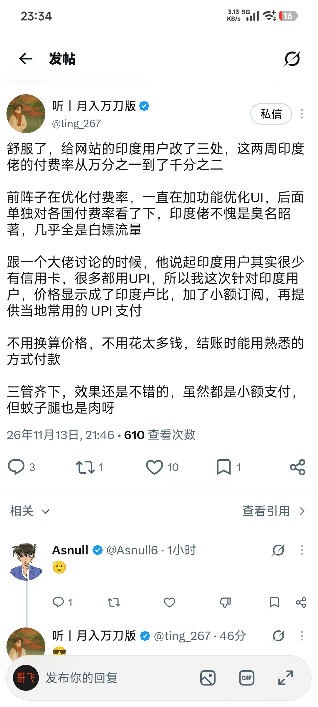

2026 年 11 月 13 日深夜，哥飞在群里转了一张 X 截图。发帖人「听 | 月入万刀版」没有继续加功能，只针对印度用户改了三处，两周内把印度用户的付费率从万分之一做到千分之二。
原文截图

三处改动
- 价格改成印度卢比显示，用户不用自己换算。
- 增加小额订阅，单笔金额压到不用犹豫。
- 接入 UPI，印度人最常用的本地支付方式。
此前的思路是加功能、优化 UI，一直没什么起色；单独把各国付费率拆开看，才发现印度几乎全是白嫖流量。后来有前辈提醒，印度用户很少持有信用卡、多数用 UPI，才有了上面这三处改动。
结果
改动之后，结账时不用换算价格、不用花太多钱、还能用熟悉的方式付款。两周内印度付费率从万分之一（0.01%）升到千分之二（0.2%），约 20 倍；虽然都是小额支付，发帖人的说法是「蚊子腿也是肉」。
群友讨论
群友的看法集中在本地化。张亿东说他 10 月做过一个针对墨西哥亡灵节的「超度宠物」项目，支付直接收墨西哥比索，效果很好，结论是「一定要货币本地化」。桃则觉得这个赛道虽然小众，但客单价应该比较可观。
原始对话
以下是 2026年11月13日 23:35 至 2026年11月14日 07:27 的原始对话，共 6 条消息、5 位发言者，按时间顺序完整保留。
聊天记录（6 条）
参与者 5 人：哥飞、陶宝 | AI 培训·落地、宽、张亿东、桃 · 时间范围 2026年11月13日 23:35 至 2026年11月14日 07:27 · 原始 6 条，保留 6 条